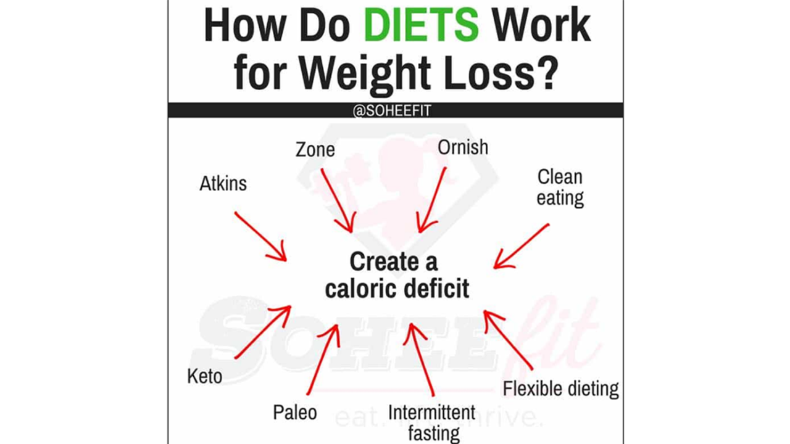

How to reduce fat?
Many person think that if someone eat less and to more exercises he/she will automatically get thinner.But its not true,training and eating less will not fully help you to reduse fat.One person can eat only 1 meal at mcdonalds and est nothing during the day, he/she will still get fat.

Green tea has been shown to improve blood flow and lower cholesterol. A 2013 review of many studies found green tea helped prevent a range of heart-related issues, from high blood pressure to congestive heart failure. What's good for the heart is usually good for the brain; your brain needs healthy blood vessels, too.It is also a natural antioxidant.But furthermore it has a property which reduces fat in the body,drinking greentea has proven to help in weight loss
What to eat?
Knowing what to eat if you want to reduce fat is very important. You should be on a calorie deficit which mean eation less calorie than you burn in a day. Mastering that you will be able to lose weight.
Please click on the different type of diet for more in depth definition
These are examples of diet that can help you lose weight.But before taking any step further and doing a diet,you should go and ask your doctor if doing a diet is good for you. For example if you have not yet finished your growth or have any illness it is forbidden for you to make any diet.To prevent any side effect it is better to consult your doctor first
Yoou do not know how to cook?
It does not matter.Nowadays there are many tutos on how to cook low calorie meals on youtube. Anyone can follow these tutos and cook a perfect meal